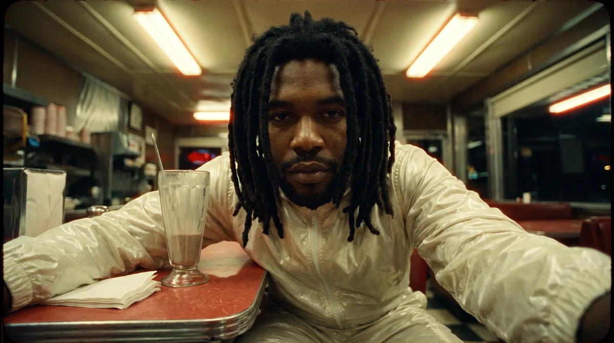

Seu espaço de criação
Dê forma
ao que imagina.
Da primeira imagem ao último frame.
Ferramentas para experimentar, dirigir
e encontrar a sua linguagem.

01 / IMAGEM COM IAHiggsfield + Google
Fotograma
Sua direção. Novas imagens.
02 / COMPOSIÇÃO
Studio
Um canvas. Muitas camadas.
Continue explorando
O repertório é seu
Escolha seu próximo experimento.
/
41 ferramentas para criar
Nenhuma ferramenta por aqui. Ainda.
Experimente outro nome ou efeito.
Menos distância entre ideia e resultado
Feito para criar.
Não para complicar.
01Experimente no navegador. Os efeitos visuais processam sua mídia localmente. Alguns recursos de IA baixam modelos na primeira utilização.
02Sua conta, sua direção. No Fotograma, use Higgsfield pelo conector local ou uma chave Google. Créditos e disponibilidade dependem do provedor.
03Guarde o que importa. A galeria do Fotograma fica neste navegador. Baixe os originais para ter uma cópia fora dele.